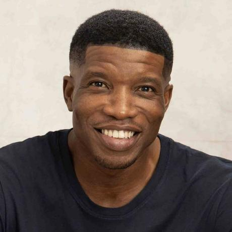

Slack Name: Kelechi Orunta

Slack Email: kelechiorunta1@gmail.com
Current Time (UTC):
Current Day:
Introduction
Hi! My name is Kelechi Orunta, and I am a passionate frontend web developer. So far, I have immersed myself in the world of web development, gaining a solid understanding of HTML, CSS, and JavaScript. Recently, I have also started working with React, a powerful library that has opened up new possibilities for creating dynamic and interactive web applications.
My journey in web development has been both challenging and rewarding. I am committed to continuous learning and improvement, striving to build websites that are not only visually appealing but also user-friendly and efficient. As I continue to grow in my career, I am excited to set ambitious goals, including becoming a full-stack developer and achieving a mid-annum salary of over 1,700,000 Naira or more. Join me as I embark on this journey, dedicated to pushing the boundaries of what I can achieve in the tech industry.
My Tech Goals Within Two Years
The Journey Begins
Welcome to my journey towards becoming a proficient full-stack developer! Over the next two years, I am committed to mastering the fundamentals of web development, creating dynamic and visually appealing websites, and eventually becoming a full-stack developer with a competitive salary. In order to achieve this, I have broken down this ambitious goal into smaller, achievable milestones, ensuring a structured and focused approach to my learning and development. Join me as we explore my goals and objectives below.
First Year: Learning and Building the Foundation
Second Year: Advanced Development and Full-Stack Transition
First Quarter (Months 1-3): Fundamentals of Web Development
Objective 1: Learn HTML, CSS, and basic JavaScript.
Positive Affirmation:I am building a solid foundation in web development by mastering the basics.
Objective 2:Create static web pages to practice HTML and CSS skills.
Affirmation:I am enhancing my design skills by creating visually appealing web pages.
Objective 3:Complete at least one online course or bootcamp on web development basics.
Affirmation:I am dedicated to continuous learning and growth in web development.
Positive Affirmation:I am building a solid foundation in web development by mastering the basics.
Objective 2:Create static web pages to practice HTML and CSS skills.
Affirmation:I am enhancing my design skills by creating visually appealing web pages.
Objective 3:Complete at least one online course or bootcamp on web development basics.
Affirmation:I am dedicated to continuous learning and growth in web development.
Affirmation:I am dedicated to continuous learning and growth in web development.